A graduation project on what binds a divided city together, explored with a research through design approach.
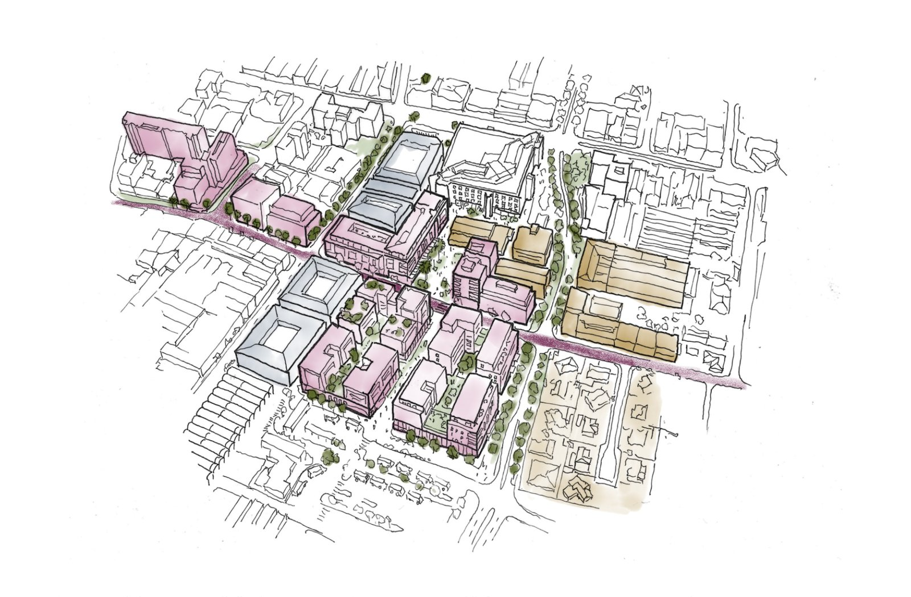
Bellville, Cape Town’s second Central Business District, is shaped by realities that exist side by side: formal and informal trade, malls and street vendors, MyCiTi buses and minibus taxis, wealth and poverty often separated by a single road or rail line. My thesis does not treat these dualities as problems to solve, but as parallel and legitimate systems. The research question is: How can urban design translate the intelligence of Bellville’s contrasting realities into visible spatial strategies that create adaptable urban environments?
Through research by design, including fieldwork in Cape Town, I analysed the systems of Bellville. From this I developed four perspectives for Bellville along two axes, Global vs Local and Destination vs Interchange. Each perspective images Bellville in a different future. Rather than choosing one of these perspectives as the outcome for Bellville, the vision presents how you can layer urban interventions from each perspective in time.
Graduation committee: Tess Broekmans (mentor), Eric Frijters, Martin Sobota.
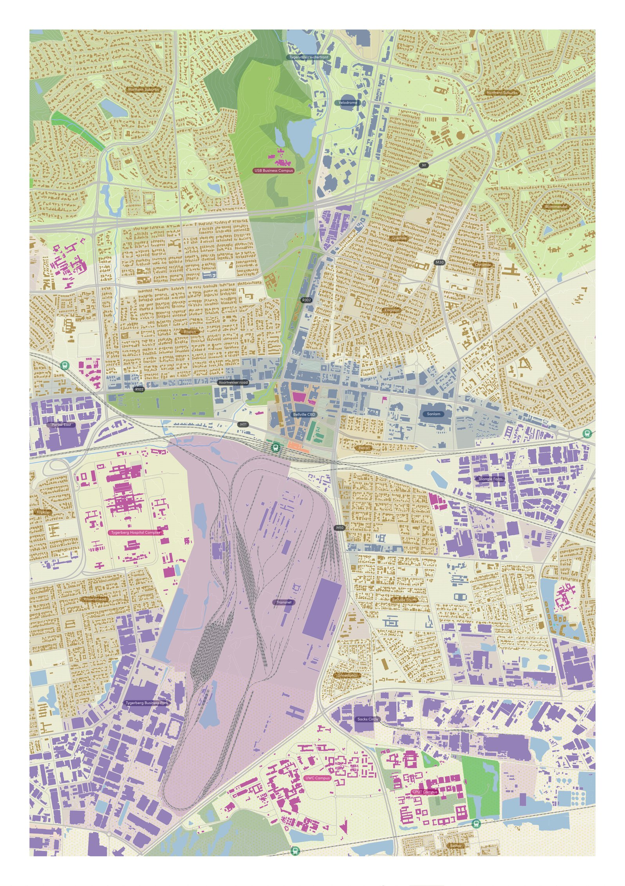
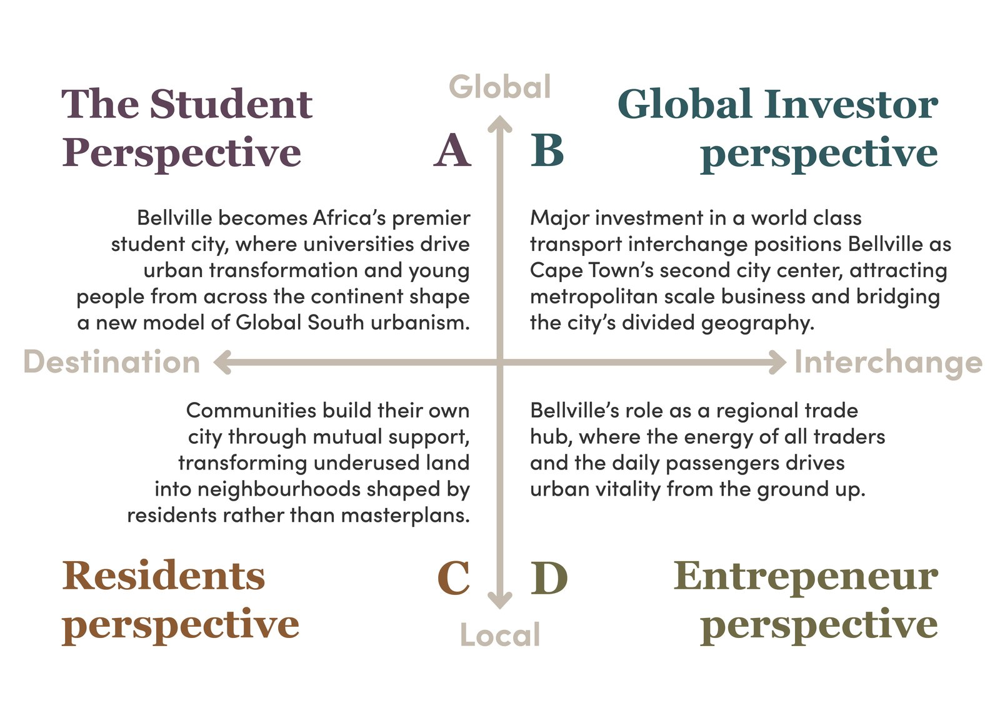
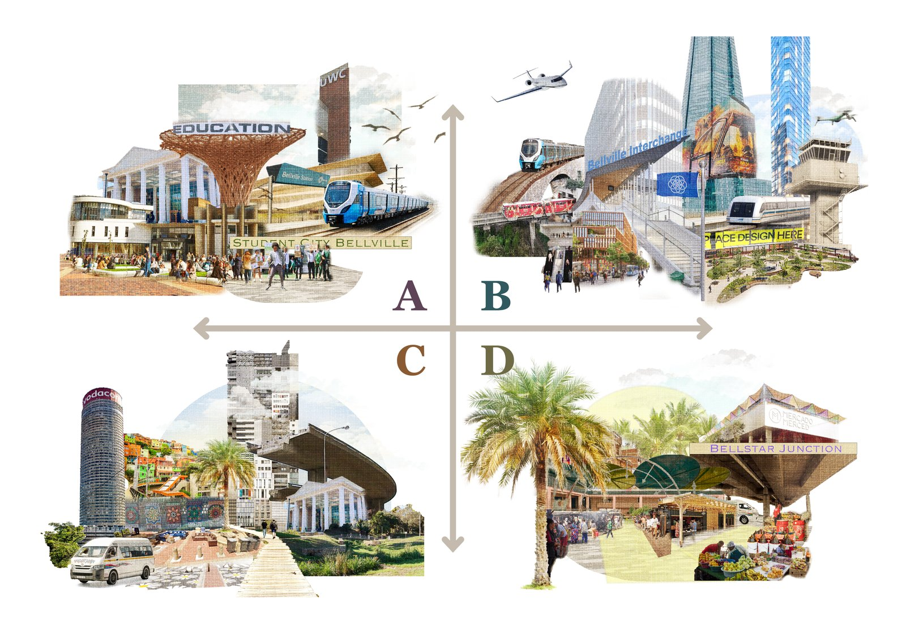
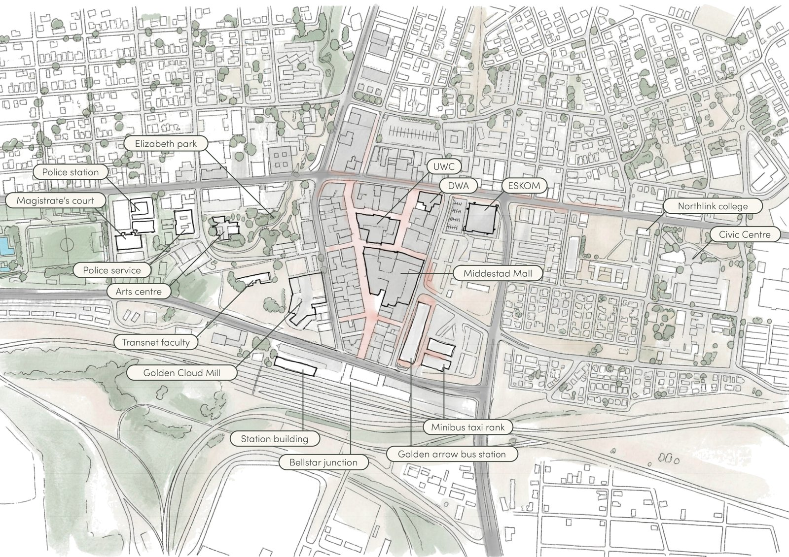
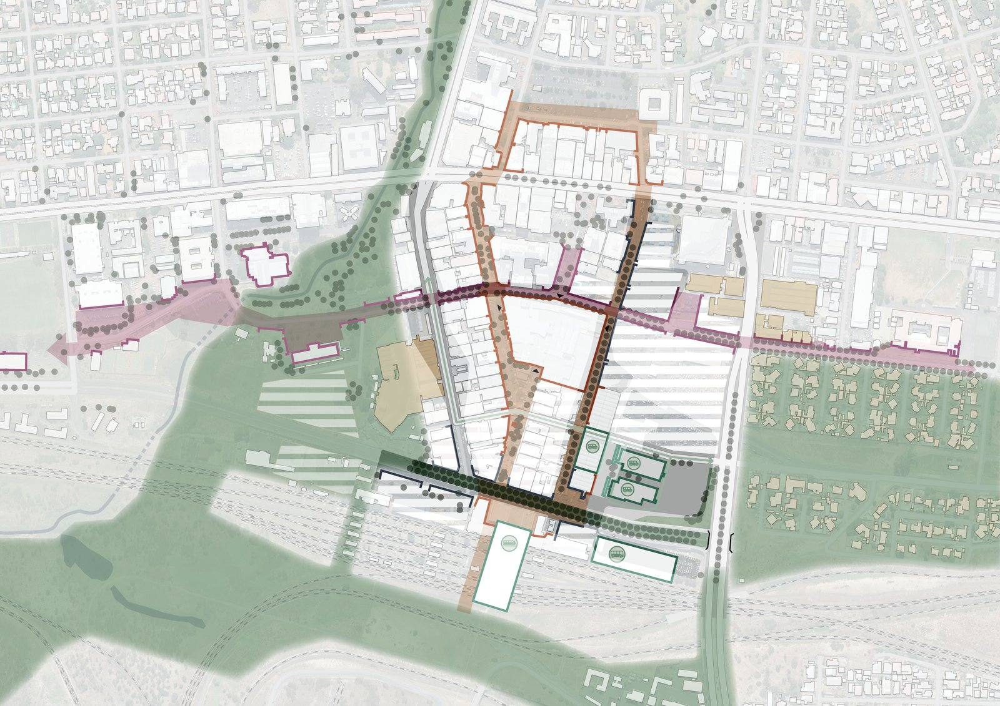
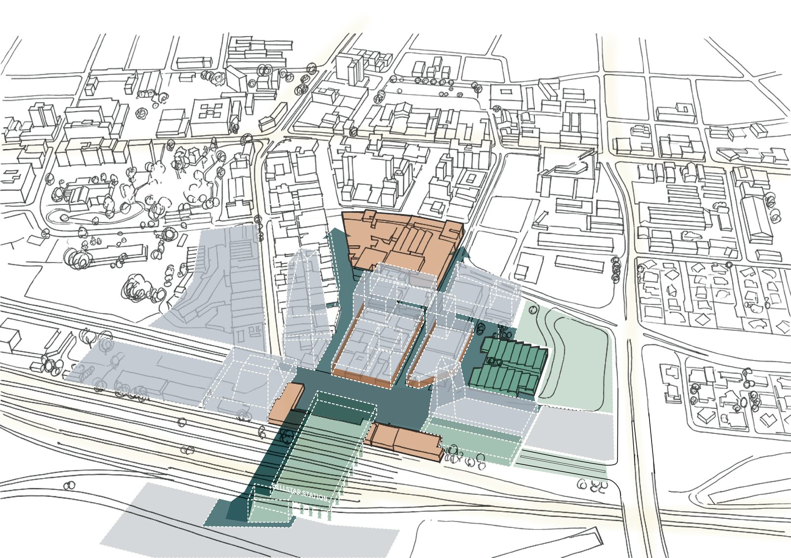
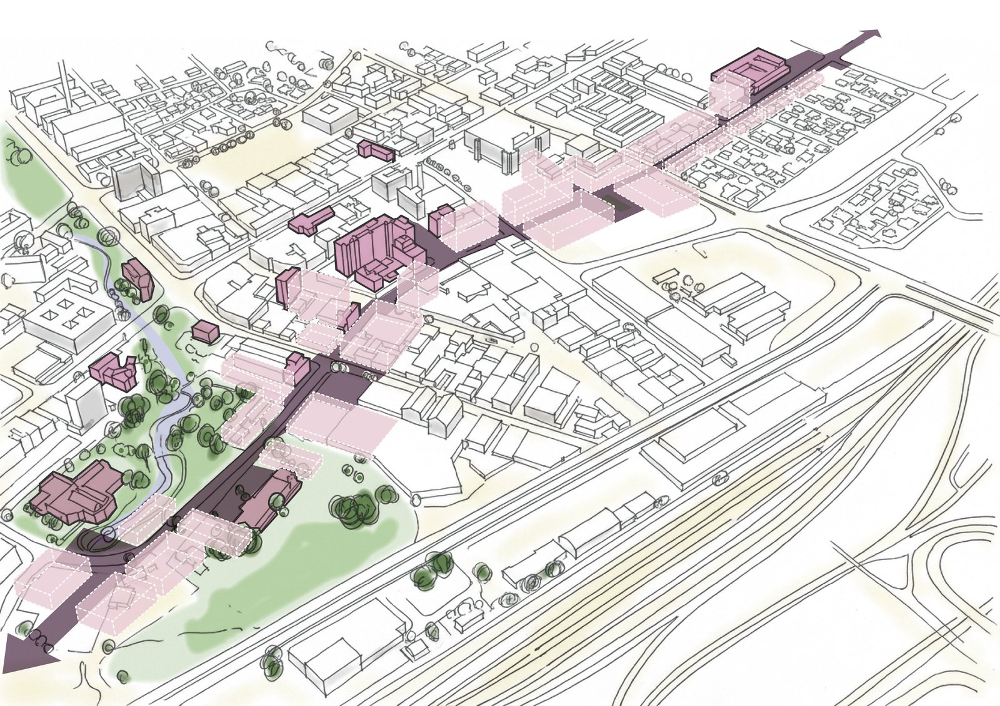
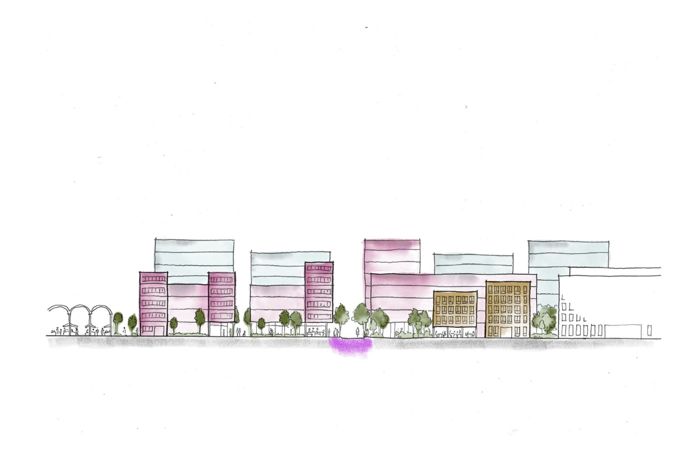
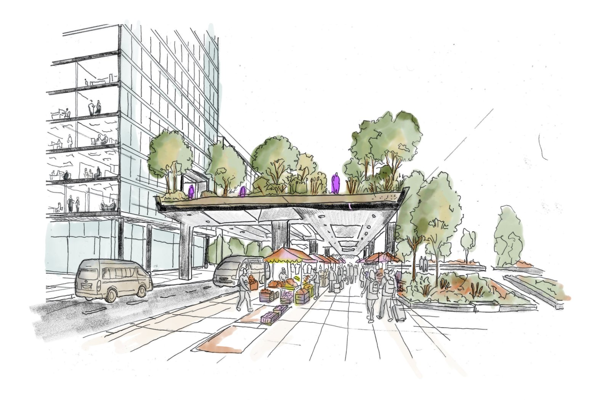
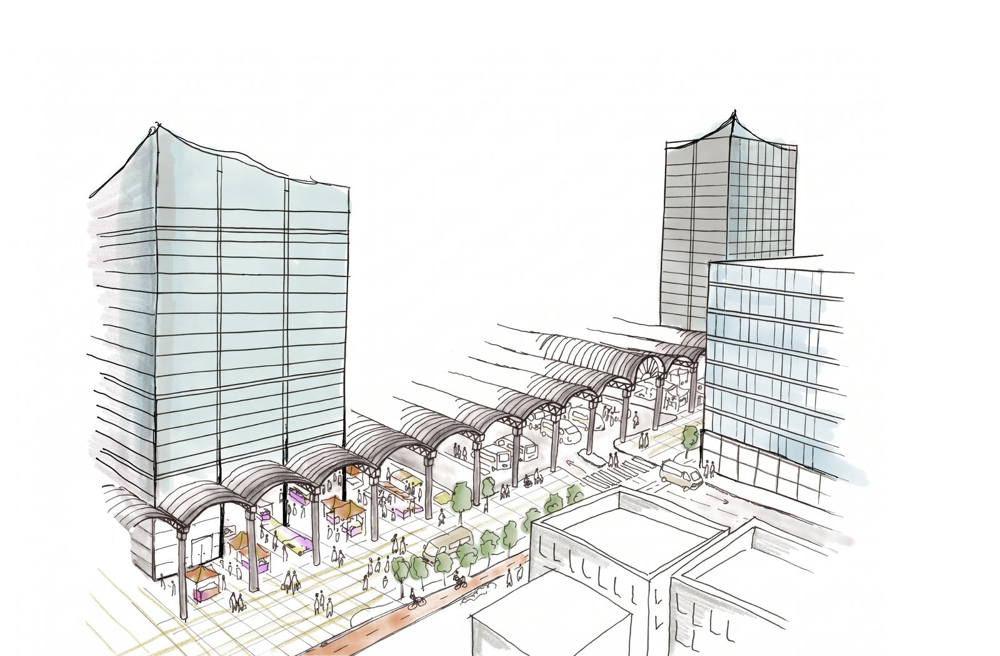
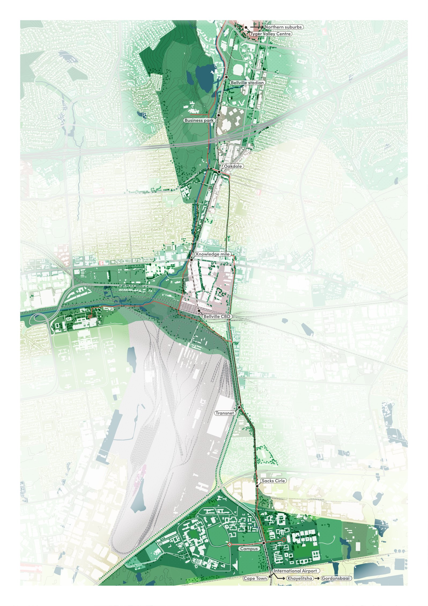